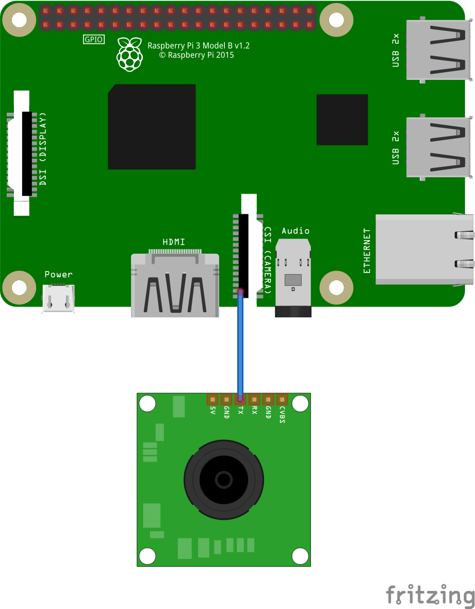
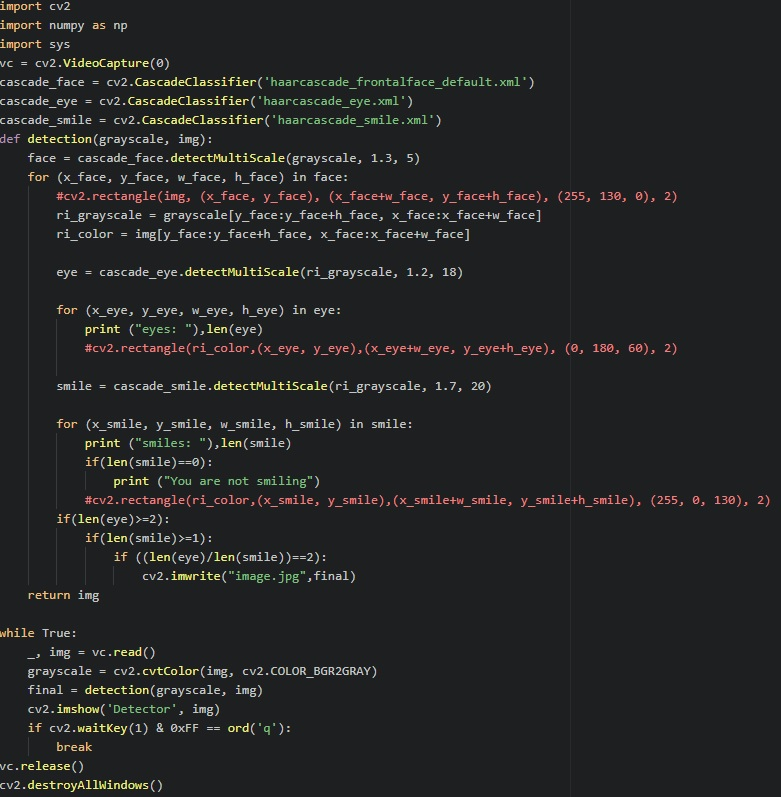

About the project
Using Haar Cascades the program detects whether a person is smiling and if the result is positive, it will take a picture.
Using Haar Cascades the program detects whether a person is smiling and if the result is positive, it will take a picture.
Since only 2 components are used, we have the following Fritzing schema showing a camera module connected to a Raspberry Pi 3 model B.
For this project I have used the following components:
It is not neccessary to have the same model of RPi. It will also work for a camera module.
If there isn't one installed, a Python IDE is recommended.
OpenCV can be downloaded here
First we take our RPi and enable the camera in the configurations.
This can either be done by using sudo raspi-config or enabling it in Preferences
Once we have OpenCV installed and the camera working we can run the source code.
The following is the code provided in the classroom repository.
First we import the .XML files ; the cascades which will detect the structures of the face : frontal view of the face, eyes and the smile.
cascade_face = cv2.CascadeClassifier('haarcascade_frontalface_default.xml')
cascade_eye=cv2.CascadeClassifier( 'haarcascade_eye.xml')
cascade_smile=cv2.CascadeClassifier( 'haarcascade_smile.xml')
Next we make a function that will take each frame and turn it grayscale, then it goes through the process of detecting how many eyes there are in each frame and how many smiles.
To help with this I had the number of eyes and smiles detected printed in the terminal.
The lines that are commented are actually there to form rectangles that help with the position of what we are detecting. Since we are taking a picture of what is displayed, I decided to comment said rectangles but I have used them for testing.
For each frame we have a list of eyes and smiles so I have used said list's size in such way that if it detects at least 2 'eyes' and 1 'smile' in the frame it will take a picture. I took into account the fact that for a 'selfie' we are supposed to have our eyes open and to be smiling.
The while is there to loop the entire function. We can end the session by pressing either the 'Esc' button or 'q' on our keyboards.
I would like to, if we have the chance, test it on other people at the laboratory. Especially on larger groups to see how well it can detect more than one smile and work on it to further improve accuracy.
Short video presentation :
Special thanks to: